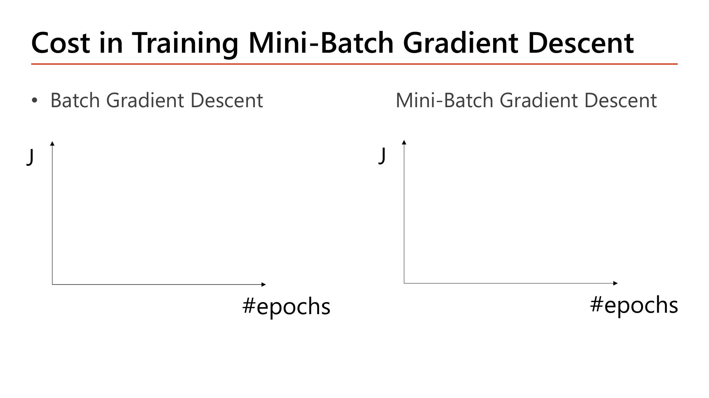
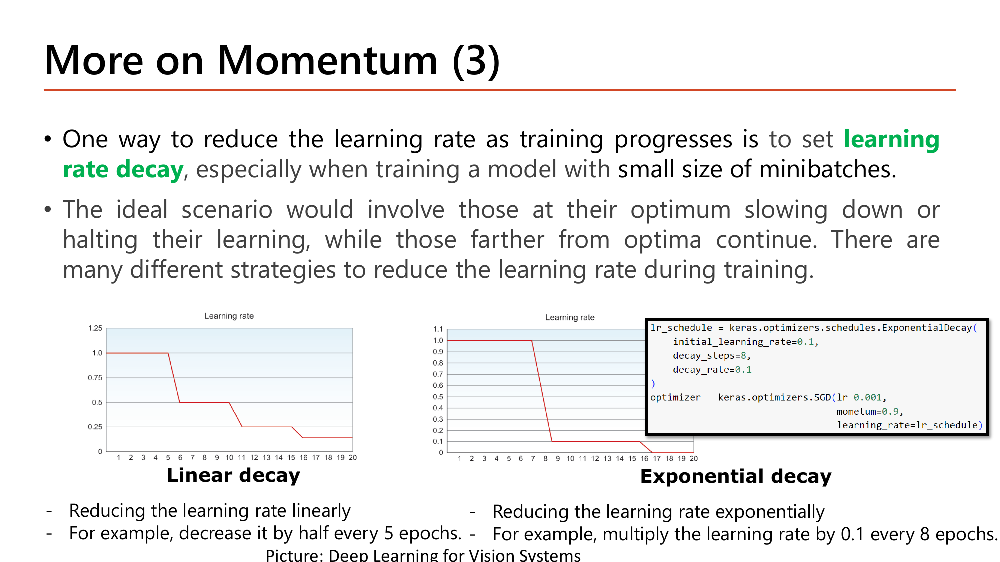
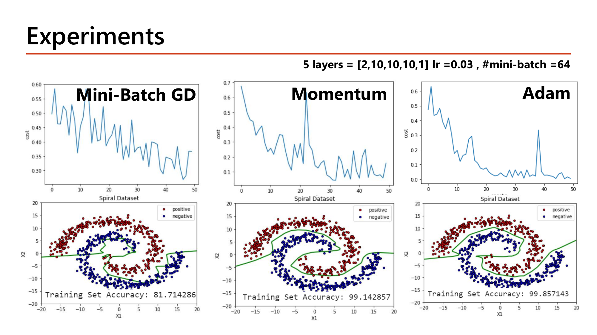
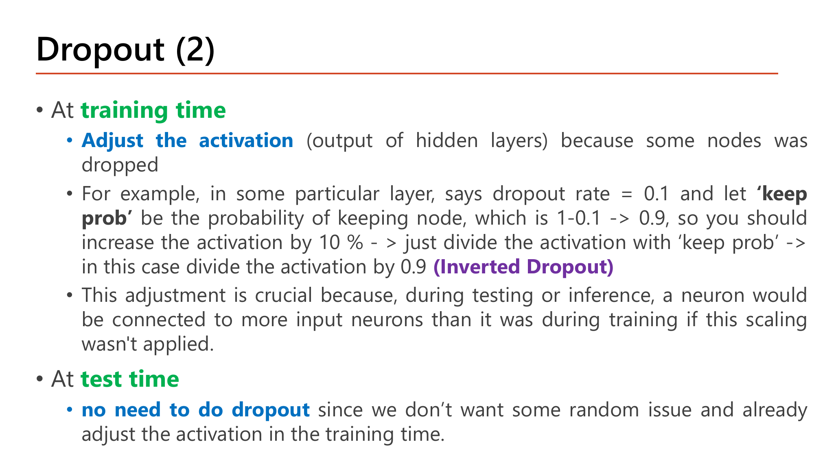

Lecture4 (deep_learning_part2_1.pdf, 35 หน้า) · 2603520 Deep Learning
Deep Neural Network: จาก 2 Layer สู่ L Layer, และ Optimizer ที่เร็วกว่า Gradient Descent
บทนี้ทำ 2 อย่าง: (1) ยืนยันว่าสูตร backprop จาก Lesson 3 ใช้ได้กับเครือข่ายกี่ layer ก็ได้ แค่โซ่ chain rule ยาวขึ้น (2) แนะนำ optimizer ที่ฉลาดกว่า plain gradient descent — Momentum, RMSProp, Adam, AdamW — พร้อมเทคนิคลด overfitting (regularization, dropout, early stopping, data augmentation). ทุกสูตรมีตัวอย่างตัวเลขทีละขั้น.
ภาพรวมก่อนเริ่ม — ปัญหา 2 อย่างที่บทนี้แก้
- เทรนช้า / เดินอ้อม: gradient descent ธรรมดาใช้ข้อมูลทั้งชุดต่อ 1 ก้าว และก้าวสั้นๆ แกว่งไปมา ⇒ แก้ด้วย mini-batch + Momentum + RMSProp/Adam (§3–5)
- จำข้อสอบ (overfit): โมเดลลึกมีพารามิเตอร์เยอะ ⇒ แก้ด้วย regularization, dropout, early stopping, data augmentation (§6–7)
1. Deep Neural Network: สูตรเดิม แค่ L Layer
![Fully connected deep neural network diagram with layers 1 through L, showing the general forward computation formula for layer 1 (z1[1]=theta10[1]+theta11[1]x1+theta12[1]x2, a1[1]=g(z1[1])) and the analogous formula for the final layer L (z1[L]=theta10[L]+theta11[L]a1[L-1]+theta12[L]a2[L-1], h(x)=a1[L]=g(z1[L]))](../assets/slides/dl4-p03-deep-nn-forward-general.png) Slide: How Deep Neural Network Works — สูตร forward ทั่วไปสำหรับ layer ใดๆ (Lecture4.pdf, p.3)
Slide: How Deep Neural Network Works — สูตร forward ทั่วไปสำหรับ layer ใดๆ (Lecture4.pdf, p.3)
สูตร forward เหมือน Lesson 2–3 เป๊ะ แค่เปลี่ยนจาก "layer 1, layer 2" เป็น "layer \(l\) ใดๆ" (นิยาม \(a^{[0]} := x\), และผลลัพธ์ \(h(x) = a^{[L]}\)):
$$z_j^{[l]} = \theta_{j0}^{[l]} + \sum_{i}\theta_{ji}^{[l]}\,a_i^{[l-1]},\qquad a_j^{[l]} = g\!\left(z_j^{[l]}\right)$$
คำนวณ: นับพารามิเตอร์ของโครงข่ายลึก \([2,10,10,10,1]\) (5 layer — ตัวอย่างในสไลด์หน้า 24)
กฎ: \(\theta^{[l]}\) มีขนาด \(s_l\times(s_{l-1}+1)\) เมื่อ \(s_l\) = จำนวน node ใน layer \(l\)
ไล่ทีละ layer
$$\begin{aligned}
\theta^{[1]}&:\ 10\times(2+1)=30\\
\theta^{[2]}&:\ 10\times(10+1)=110\\
\theta^{[3]}&:\ 10\times(10+1)=110\\
\theta^{[4]}&:\ 1\times(10+1)=11
\end{aligned}$$รวม
$$30+110+110+11 = 261$$
261 พารามิเตอร์ (ตัวเลขเดียวกับที่ model.summary() รายงานใน Lesson 5–6) — ระวัง: layer กลางๆ ที่เชื่อมกัน \(10\times10\) ครองพารามิเตอร์ส่วนใหญ่.
![Deep network with many layers showing the general backpropagation formula: dJ/dtheta_1,1^(L-1) = delta^(L) times theta_1,1^(L) times g'(z1^[L-1]) times a1^(L-2), generalizing the chain rule to reach further back through layer L-1, with an interpretation box explaining that a large delta_destination causes a larger gradient update](../assets/slides/dl4-p04-deep-nn-backward-interpretation.png) Slide: How Deep Neural Network Works (2) — สูตร backward ทั่วไป (Lecture4.pdf, p.4)
Slide: How Deep Neural Network Works (2) — สูตร backward ทั่วไป (Lecture4.pdf, p.4)
Backward ก็เป็นสูตรเดิม (\(\delta\) ส่งย้อนทีละ layer). ตัวอย่างสไลด์ ขยายไปอีก 1 ชั้น:
$$\frac{\partial J}{\partial\theta_{1,1}^{[L-1]}} = \delta^{[L]}\cdot\theta_{1,1}^{[L]}\cdot g'\!\left(z_1^{[L-1]}\right)\cdot a_1^{[L-2]}$$
ยังคง 4 เทอม (\(\delta,\theta,g',a\)) เหมือนกรณี 2 layer เพียงแต่ superscript เป็น \([L],[L-1],[L-2]\) แทน \([1],[2]\). ความหมาย (Interpretation ของสไลด์): ถ้า weight เส้นหนึ่งเชื่อมไปยัง node ที่ \(\delta\) ใหญ่ (node นั้นมีส่วนทำให้ error สูง) gradient ของเส้นนั้นจะใหญ่ ⇒ ถูกปรับแรงกว่า — "ปรับมากตรงที่ผิดมาก".
คำนวณ: ส่ง \(\delta\) ย้อนผ่าน 3 layer ด้วยตัวเลข (เห็นว่า gradient ต้น ๆ เล็กลงอย่างไร)
เครือข่ายที่มี 1 node ต่อ layer ต่อกันเป็นโซ่ (ไม่มี bias เพื่อความสั้น) \(x=1\to a^{[1]}\to a^{[2]}\to a^{[3]}\), ทุก weight = 1, sigmoid ทุก node, \(y=1\)
Forward
$$\begin{aligned}
z^{[1]}&=1\ \Rightarrow\ a^{[1]}=g(1)=0.731\\
z^{[2]}&=0.731\ \Rightarrow\ a^{[2]}=g(0.731)=0.675\\
z^{[3]}&=0.675\ \Rightarrow\ a^{[3]}=g(0.675)=0.663
\end{aligned}$$\(\delta\) ที่ output
$$\delta^{[3]} = a^{[3]}-y = 0.663-1 = -0.337$$ส่งย้อน: \(\delta^{[l-1]} = \theta^{[l]}\,\delta^{[l]}\,g'(z^{[l-1]})\) โดย \(g'(z)=a(1-a)\)
$$\begin{aligned}
\delta^{[2]} &= 1\times(-0.337)\times0.675(1-0.675) = -0.0740\\
\delta^{[1]} &= 1\times(-0.0740)\times0.731(1-0.731) = -0.0146
\end{aligned}$$Gradient ของ weight แต่ละ layer = \(\delta\times a\) ของ layer ก่อนหน้า
$$\frac{\partial J}{\partial\theta^{[3]}} = -0.337\times0.675 = -0.2277,\quad \frac{\partial J}{\partial\theta^{[2]}} = -0.0740\times0.731 = -0.0541,\quad \frac{\partial J}{\partial\theta^{[1]}} = -0.0146\times1 = -0.0146$$
gradient ของ layer แรกเล็กกว่า layer สุดท้ายราว 15.7 เท่า (\(0.2277/0.0146\)) จากเครือข่ายที่ลึกแค่ 3 layer — แต่ละชั้นที่ผ่านคูณ \(g'\le0.25\) เพิ่ม. นี่คือตัวอย่างเล็กของ vanishing gradient (Lesson 5 §1).
กลไกที่ต้องอธิบายได้
- ทำไมต้องมี
- สูตรทั่วไปใช้ superscript \(l\) แทนเลขตายตัว เพราะ backprop เป็น local operation (Lesson 3 §8) — ไม่ว่ากี่ layer แต่ละ node คำนวณ \(\delta\) ด้วยสูตรเดียวกัน ต่างแค่ "\(l\) เท่าไร".
- เปลี่ยนแล้วเกิดอะไร
- ถ้า \(L=5\) การหา \(\partial J/\partial\theta^{[3]}\) (กลางเครือข่าย) ต้องไล่ผ่าน layer 3→4→5 รวม 3 ขั้น — จำนวนขั้น = "ระยะทาง" \(L-l\) จาก layer นั้นถึง output ไม่ใช่ค่าคงที่ (ตัวอย่างโซ่ 3 layer ข้างบน: layer 1 ผ่าน 2 ทอดของ \(g'\) จึงเล็กกว่า layer 3 ที่ผ่านทอดเดียว).
- เชื่อมกับ
- Lesson 3 §2 (จำนวนขั้น = จำนวน layer ที่ต้องผ่าน) — บทนี้ทำให้เป็นสูตรทั่วไป ไม่ใช่หลักการใหม่.
คำถาม 1Deep NN Backprop
สูตร ∂J/∂θ₁,₁⁽ᴸ⁻¹⁾ = δ⁽ᴸ⁾·θ₁,₁⁽ᴸ⁾·g'(z₁⁽ᴸ⁻¹⁾)·a₁⁽ᴸ⁻²⁾ เทียบกับสูตร 2 layer เดิมจาก Lesson 3 ต่างกันอย่างไร?
2. ทำไม Deep Network เทรนยาก: 4 ปัญหาหลัก
- เทรนช้า / ลู่เข้าช้า เมื่อข้อมูลมาก
- เสี่ยง overfitting เพราะพารามิเตอร์มาก
- vanishing/exploding gradient (โซ่ยาวคูณ \(g'\) หลายตัว — Lesson 5 ลงรายละเอียดเต็ม)
- hyperparameter เยอะ (จำนวน layer/node, \(\alpha\), \(\lambda\), …) — Lesson 6 แก้ด้วย tuner
บทนี้ตอบข้อ 1 ด้วย optimizer ที่เร็วกว่า (§3–5) และข้อ 2 ด้วยเทคนิคลด overfitting (§6–7).
คำนวณ: "ลึก" กับ "กว้าง" — พารามิเตอร์ต่างกันแค่ไหน
เทียบ 2 โมเดลที่รับ input 2 ตัวและให้ output 1 ตัว
ลึก \([2,10,10,10,1]\)
$$30+110+110+11 = 261$$กว้างแต่ตื้น \([2,50,1]\)
$$50\times(2+1) + 1\times(50+1) = 150 + 51 = 201$$
ลึก 4 layer (30 hidden node) มี 261 ตัว; กว้าง 1 layer (50 hidden node) มี 201 ตัว — จำนวนพารามิเตอร์ขึ้นกับผลคูณของความกว้างสอง layer ติดกัน ไม่ใช่แค่จำนวน node.
กลไกที่ต้องอธิบายได้
- ทำไมต้องมี
- ปัญหา (2) overfit และ (3) vanishing เชื่อมกัน: ยิ่งลึก (ได้ expressiveness) ยิ่งมีพารามิเตอร์มาก (เสี่ยง overfit) และยิ่งมีโซ่ยาว (เสี่ยง vanishing).
- เปลี่ยนแล้วเกิดอะไร
- ลดความลึกแต่เพิ่มความกว้างให้พารามิเตอร์รวมเท่าเดิม ⇒ vanishing เบาลง (โซ่สั้น) แต่ overfit ไม่หายเพราะพารามิเตอร์เท่าเดิม — "ความลึก" กับ "จำนวนพารามิเตอร์" เป็นสาเหตุคนละกลไกที่มักมาด้วยกัน.
- เชื่อมกับ
- §3–5 แก้ (1), §6–7 แก้ (2), Lesson 5 แก้ (3), Lesson 6 แก้ (4).
3. Batch, Stochastic, Mini-Batch Gradient Descent
ไอเดีย: gradient ของ cost คือค่าเฉลี่ยของ gradient แต่ละตัวอย่าง (Lesson 3 §4). คำถามคือ จะเฉลี่ยกี่ตัวอย่างก่อนก้าว 1 ครั้ง? ตัวเลือก 3 แบบ ต่างกันแค่ "batch size \(B\)" (\(m\) = จำนวนตัวอย่างทั้งหมด):
 Slide: Batch Gradient Descent — ใช้ทุกตัวอย่างต่อ 1 update (Lecture4.pdf, p.7)
Slide: Batch Gradient Descent — ใช้ทุกตัวอย่างต่อ 1 update (Lecture4.pdf, p.7)
Batch GD (\(B=m\)): อัปเดต \(\theta\) หลังคำนวณ gradient จากทุกตัวอย่าง (1 update = 1 epoch) — ทิศทางแม่น ไม่มี noise แต่ถ้ามี 100 ล้านแถวต้องรวมทั้งหมดก่อนอัปเดตได้ครั้งเดียว.
 Slide: Stochastic Gradient Descent — ใช้ 1 ตัวอย่างต่อ 1 update (Lecture4.pdf, p.9)
Slide: Stochastic Gradient Descent — ใช้ 1 ตัวอย่างต่อ 1 update (Lecture4.pdf, p.9)
SGD (\(B=1\)): อัปเดตทุกตัวอย่าง — เร็วและ noise ช่วยให้กระโดดออกจาก local minimum/saddle ได้ แต่เส้นทางแกว่งมาก และเสียประโยชน์จากการคูณเมทริกซ์ (Lesson 2 §6).
 Slide: Mini-Batch Gradient Descent — ประนีประนอมระหว่างสองแบบ (Lecture4.pdf, p.11)
Slide: Mini-Batch Gradient Descent — ประนีประนอมระหว่างสองแบบ (Lecture4.pdf, p.11)
Mini-batch GD (\(1<B<m\)): กึ่งกลาง — สุ่มลำดับข้อมูล แบ่งเป็นกลุ่ม แล้วอัปเดตทีละกลุ่ม.
คำนวณ: จำนวน update ต่อ epoch เมื่อ \(m = 10{,}000\) (ตัวอย่างสไลด์หน้า 11)
สูตร: จำนวน update ต่อ epoch \(= \lceil m/B \rceil\)
สไลด์: แบ่งเป็น mini-batch ละ 1,000
$$\frac{10{,}000}{1{,}000} = 10\text{ update/epoch}$$เปลี่ยน \(B\) เป็นค่าอื่น
| \(B\) | วิธี | update/epoch |
|---|
| 10,000 | Batch GD | 1 |
| 1,000 | Mini-batch (สไลด์) | 10 |
| 256 | Mini-batch | \(\lceil 39.06\rceil = 40\) |
| 64 | Mini-batch | \(\lceil156.25\rceil = 157\) |
| 32 | Mini-batch | \(\lceil312.5\rceil = 313\) |
| 1 | SGD | 10,000 |
ความ noisy ของ gradient
gradient จาก \(B\) ตัวอย่างคือค่าเฉลี่ย — ความคลาดเคลื่อนมาตรฐานของค่าเฉลี่ย \(\propto 1/\sqrt{B}\): เทียบ \(B=1\) กับ \(B=1000\) noise ต่างกัน \(\sqrt{1000}\approx 31.6\) เท่า
\(B\) เล็ก ⇒ อัปเดตบ่อย (เร็ว) แต่ noisy; \(B\) ใหญ่ ⇒ นิ่ง แต่อัปเดตน้อยและกินหน่วยความจำ — trade-off ตัวเดียว ไม่ใช่ 3 อัลกอริทึมที่ไม่เกี่ยวกัน.

Slide: Cost in Training Mini-Batch Gradient Descent — แกนเปล่าให้ร่างกราฟเอง (Lecture4, p.13)
เฉลยกราฟที่สไลด์ให้วาด: Batch GD ใช้ทั้งชุดต่อก้าว จึงเป็นเส้นโค้งลดเรียบสม่ำเสมอตาม epoch. Mini-batch แต่ละก้าวเห็นข้อมูลต่างกัน จึงเป็นเส้นที่ขึ้นๆ ลงๆ ระหว่างทางแต่มีแนวโน้มลดลง (ตัวอย่างจริงในสไลด์หน้า 24: cost ของ mini-batch GD แกว่งระหว่าง 0.27–0.58 ตลอด 50 epoch). แกว่งเป็นเรื่องปกติของ mini-batch ไม่ใช่ bug.
เลือก batch size ยังไง (สไลด์หน้า 12): ข้อมูลเล็ก (< 2,000) ใช้ batch เต็มได้เลย (\(B=m\)); ข้อมูลใหญ่เริ่มที่ 32–256 ตามหน่วยความจำ/ฮาร์ดแวร์; ค่าที่เป็นกำลังของ 2 (32, 64, 128, 256) นิยมเพราะมักทำงานคล่องบน GPU แต่ไม่ใช่ข้อบังคับ.
กลไกที่ต้องอธิบายได้
- ทำไมต้องมี
- ทั้งสามวิธีประมาณ gradient ตัวเดียวกัน (ค่าคาดหวังเท่ากัน) ต่างกันที่ "ใช้กี่ตัวอย่างประมาณ" — ยิ่งน้อยยิ่งไม่แม่น (noise \(\propto1/\sqrt B\)) แต่ยิ่งอัปเดตบ่อย.
- เปลี่ยนแล้วเกิดอะไร
- \(m=10{,}000\): \(B=1\) ได้ 10,000 update/epoch (noisy สุด), \(B=1{,}000\) ได้ 10 (นิ่งกว่า), \(B=10{,}000\) ได้ 1 (นิ่งสุดแต่ช้าสุด) — สาม algorithm คือ batch size เดียวกันเลื่อนค่า.
- เชื่อมกับ
- \(D=\frac1m\Delta\) ใน Lesson 3 §4 คือค่าเฉลี่ยของ gradient — ยิ่ง \(m\) (ที่นี่คือ \(B\)) น้อย variance ของค่าเฉลี่ยยิ่งสูง; และ Lesson 6 §8 แนะนำ \(B\) เริ่มที่ 32–256 ตามสไลด์ตัวเดียวกัน.
คำถาม 2Mini-batch GD
มี training set 10,000 ตัวอย่าง แบ่งเป็น mini-batch ขนาด 1,000 ตัวอย่างต่อ batch จำนวน mini-batch ต่อ 1 epoch เท่ากับเท่าไหร่?
4. Momentum: ใช้ประวัติของ Gradient ช่วยเร่งความเร็ว
 Slide: Gradient Descent with Momentum — เปรียบเหมือนลูกบอลกลิ้งลงเขา (Lecture4.pdf, p.14)
Slide: Gradient Descent with Momentum — เปรียบเหมือนลูกบอลกลิ้งลงเขา (Lecture4.pdf, p.14)
แทนที่จะใช้ gradient ณ จุดปัจจุบันตรงๆ (noisy, zig-zag) Momentum ใช้ "ค่าเฉลี่ยถ่วงน้ำหนักแบบเอ็กซ์โพเนนเชียล" (EWA) ของ gradient ที่ผ่านมา — เหมือนลูกบอลกลิ้งลงเขา: ทิศทางที่ผ่านมาต่อเนื่องถูกขยายแรง ทิศที่แกว่งไปมาหักล้างกัน.
4.1 EWA คืออะไร (สไลด์หน้า 15)
 Slide: Exponential Weighted Moving Averages — ขยายสูตรแบบ recursive (Lecture4.pdf, p.15)
$$v_t = \beta\,v_{t-1} + (1-\beta)\,\text{value}_t$$
Slide: Exponential Weighted Moving Averages — ขยายสูตรแบบ recursive (Lecture4.pdf, p.15)
$$v_t = \beta\,v_{t-1} + (1-\beta)\,\text{value}_t$$
ค่าเฉลี่ยใหม่ = (สัดส่วน \(\beta\) ของค่าเฉลี่ยเก่า) + (สัดส่วน \(1-\beta\) ของค่าใหม่) — \(\beta\) ยิ่งใหญ่ยิ่ง "จำอดีตนาน"
พิสูจน์: ขยาย \(v_t\) ย้อนไปทีละขั้น (ตามสไลด์)
แทน \(v_{t-1} = \beta v_{t-2} + (1-\beta)\text{value}_{t-1}\)
$$v_t = \beta\big[\beta v_{t-2} + (1-\beta)\text{value}_{t-1}\big] + (1-\beta)\text{value}_t = \beta^2 v_{t-2} + \beta(1-\beta)\text{value}_{t-1} + (1-\beta)\text{value}_t$$แทน \(v_{t-2}\) ต่อ
$$v_t = \beta^3 v_{t-3} + \beta^2(1-\beta)\,\text{value}_{t-2} + \beta(1-\beta)\,\text{value}_{t-1} + (1-\beta)\,\text{value}_t$$น้ำหนักของแต่ละค่า (เมื่อ \(\beta=0.9\))
$$\text{value}_t: 0.1,\quad \text{value}_{t-1}: 0.09,\quad \text{value}_{t-2}: 0.081,\ \dots$$
ยิ่งเก่า ยิ่งถูกคูณ \(\beta\) ซ้ำ น้ำหนักลดแบบเอ็กซ์โพเนนเชียล ตามชื่อ
4.2 สูตรของ Momentum (สไลด์หน้า 16)
$$v_i := \beta\,v_i + (1-\beta)\,\frac{\partial J}{\partial\theta_i},\qquad \theta_i := \theta_i - \alpha\,v_i$$
hyperparameter คือ \(\alpha\) และ \(\beta\) (ปกติ \(\beta=0.9\)); ใน Keras คือ keras.optimizers.SGD(learning_rate=0.001, momentum=0.9). \(\beta\) ต้องอยู่ระหว่าง 0 (ฝืดมาก) ถึง 1 (ไร้แรงเสียดทาน).
คำนวณ: Momentum ขยายทิศที่สม่ำเสมอ และหักล้างทิศที่แกว่ง (\(\beta=0.9\), เริ่ม \(v_0=0\))
เทียบ gradient 2 แบบ 4 ก้าว: ก) คงที่ \(+1,+1,+1,+1\) | ข) แกว่ง \(+1,-1,+1,-1\)
แบบ ก) (ทิศเดียวต่อเนื่อง)
$$\begin{aligned}
v_1&=0.9(0)+0.1(1)=0.1\\
v_2&=0.9(0.1)+0.1=0.19\\
v_3&=0.9(0.19)+0.1=0.271\\
v_4&=0.9(0.271)+0.1=0.344
\end{aligned}$$
\(v\) สะสมเพิ่มขึ้นเรื่อยๆ (→ 1 เมื่อรอบมากขึ้น: \(v_{10}=1-0.9^{10}=0.651\))
แบบ ข) (แกว่งสลับทิศ)
$$\begin{aligned}
v_1&=0.1\\
v_2&=0.9(0.1)+0.1(-1)=-0.010\\
v_3&=0.9(-0.010)+0.1=0.091\\
v_4&=0.9(0.091)-0.1=-0.018
\end{aligned}$$
\(v\) วนอยู่ใกล้ 0 เพราะบวก/ลบหักล้างกัน
ทิศที่ "ไปทางเดิมนานๆ" ได้ก้าวสะสมใหญ่ขึ้น (0.344 ใน 4 ก้าว) ส่วนทิศที่แกว่งเหลือก้าวเกือบ 0 (−0.018) — นี่คือเหตุผลที่ Momentum ลด zig-zag ข้ามหุบเขาแคบและเร่งความเร็วตามหุบเขา (รูปสไลด์หน้า 14; และหน้า 17: ลูกบอลที่มีโมเมนตัมพอจะข้าม local minimum/plateau ได้).
สไลด์หน้า 18–19 เตือนว่า Momentum ยังใช้ learning rate ค่าเดียว และก้าวที่ใหญ่ขึ้นทำให้มักต้องลด \(\alpha\) ตามเวลา (learning rate decay):

Slide: Learning Rate Decay — Linear vs Exponential (Lecture4, p.19)
คำนวณ: learning rate ตามสองตัวอย่างในสไลด์ (เริ่มที่ 0.1)
Linear decay: "ลดลงครึ่งหนึ่งทุก 5 epoch"
$$\text{epoch }1\text{–}5: 0.1\ \to\ 6\text{–}10: 0.05\ \to\ 11\text{–}15: 0.025\ \to\ 16\text{–}20: 0.0125$$Exponential decay: "คูณด้วย 0.1 ทุก 8 epoch" (\(\alpha = \alpha_0\cdot 0.1^{\lfloor \text{epoch}/8\rfloor}\))
$$\text{epoch }0\text{–}7: 0.1\ \to\ 8\text{–}15: 0.01\ \to\ 16\text{–}23: 0.001$$
ช่วงแรกก้าวใหญ่ (เข้าใกล้เร็ว) ช่วงหลังก้าวเล็ก (ไม่ข้ามจุดต่ำสุด). ใน Keras คือ ExponentialDecay(initial_learning_rate=0.1, decay_steps=8, decay_rate=0.1); ตัวปรับระหว่างเทรนแบบ callback อยู่ใน Lesson 6 §5 (พร้อมข้อควรระวังเรื่องคูณซ้อน).
กลไกที่ต้องอธิบายได้
- ทำไมต้องมี
- ใช้ EWA แทนค่าเฉลี่ยธรรมดา เพราะ gradient ล่าสุดควรมีอิทธิพลมากกว่า (ภูมิทัศน์ cost ที่ตำแหน่งปัจจุบันต่างจากตอนเริ่ม) — ค่าเฉลี่ยธรรมดาจะลากทิศเก่าที่หมดความเกี่ยวข้องมาถ่วง.
- เปลี่ยนแล้วเกิดอะไร
- \(\beta=0.5\) แทน 0.9: น้ำหนักค่าล่าสุด 3 ตัวคือ \(0.5,\ 0.25,\ 0.125\) — ลดฮวบเร็วกว่า \(0.1,\ 0.09,\ 0.081\) มาก. \(\beta\) น้อย "จำสั้น" ปรับตัวไวแต่ noisy; \(\beta\) มาก "จำยาว" นิ่งแต่ตอบสนองช้า (ตัวอย่างข้างบนที่ \(\beta=0.9\) ต้องผ่าน ~10 ก้าวกว่า \(v\) จะถึง 0.65 ของ gradient จริง).
- เชื่อมกับ
- \(\beta\) ตัวเดียวกับ \(\beta_1\) ของ Adam (§5) และ momentum ของ Batch Normalization (Lesson 5 §3 ใช้ moving average แบบเดียวกันเก็บค่าเฉลี่ยตอน train เพื่อใช้ตอน test).
คำถาม 3EWA Expansion
จากสูตร vₜ=β·vₜ₋₁+(1−β)·valueₜ เมื่อขยายแบบ recursive ย้อนไป 2 ขั้น สัมประสิทธิ์ของ valueₜ₋₂ (ค่าเก่าสุดในสามค่า) เท่ากับอะไร?
5. RMSProp, Adam และ AdamW: ปรับ Learning Rate อัตโนมัติต่อพารามิเตอร์
สไลด์หน้า 20: adaptive optimizer ปรับ "effective learning rate" ของแต่ละพารามิเตอร์อัตโนมัติจาก gradient ที่ผ่านมา (ลดเมื่อ gradient ใหญ่ เพิ่มเมื่อเล็ก) ผลที่ได้มักดีกว่า schedule ธรรมดา และมักไม่ต้องจูน \(\alpha\) — ใช้ค่า default ได้.
5.1 RMSProp
 Slide: RMSprop — normalize gradient ด้วยค่าเฉลี่ยกำลังสอง (Lecture4.pdf, p.21)
$$s_i := \rho\,s_i + (1-\rho)\left(\frac{\partial J}{\partial\theta_i}\right)^2,\qquad \theta_i := \theta_i - \alpha\,\frac{\partial J/\partial\theta_i}{\sqrt{s_i+\epsilon}}$$
Slide: RMSprop — normalize gradient ด้วยค่าเฉลี่ยกำลังสอง (Lecture4.pdf, p.21)
$$s_i := \rho\,s_i + (1-\rho)\left(\frac{\partial J}{\partial\theta_i}\right)^2,\qquad \theta_i := \theta_i - \alpha\,\frac{\partial J/\partial\theta_i}{\sqrt{s_i+\epsilon}}$$
\(s_i\) = ค่าเฉลี่ยของ "gradient กำลังสอง" ของพารามิเตอร์ตัวนี้ (ยิ่ง gradient ใหญ่ต่อเนื่อง \(s_i\) ยิ่งสูง) แล้วหาร gradient ด้วยรากของมัน
คำนวณ: RMSProp ทำให้พารามิเตอร์ที่ gradient ต่างกัน 100 เท่า ก้าวเท่ากัน
พารามิเตอร์ A: gradient คงที่ 10 | B: gradient คงที่ 0.1 ; \(\alpha=0.001,\ \rho=0.9\), \(s=0\) ตอนเริ่ม (ละ \(\epsilon\))
plain gradient descent: ก้าว \(=\alpha g\)
$$\Delta\theta_A = 0.001\times10 = 0.01,\qquad \Delta\theta_B = 0.001\times0.1 = 0.0001$$
A ก้าวใหญ่กว่า B 100 เท่า
RMSProp รอบแรก: หา \(s\)
$$s_A = 0.9(0)+0.1(10^2) = 10,\qquad s_B = 0.1(0.1^2) = 0.001$$ก้าว \(=\alpha g/\sqrt{s}\)
$$\Delta\theta_A = 0.001\times\frac{10}{\sqrt{10}} = 0.00316,\qquad \Delta\theta_B = 0.001\times\frac{0.1}{\sqrt{0.001}} = 0.00316$$เมื่อผ่านไปหลายรอบ \(s\to g^2\)
$$\frac{g}{\sqrt{s}}\to\frac{g}{|g|} = 1\ \Rightarrow\ \Delta\theta = \alpha\ \text{ทั้ง A และ B}$$
RMSProp ทำให้ก้าวไม่ขึ้นกับ "ขนาด" ของ gradient (ขึ้นกับทิศทางเท่านั้น): A ที่ gradient ใหญ่ถูกกดก้าวลง ส่วน B ที่ gradient เล็กได้ก้าวเทียบเท่า (สไลด์: gradient ใหญ่ต่อเนื่อง ⇒ ลด effective learning rate; เล็กต่อเนื่อง ⇒ scale น้อยกว่า ได้ก้าวสัมพัทธ์ใหญ่ขึ้น). ค่า default: \(\alpha=0.001,\ \rho=0.9\).
5.2 Adam
 Slide: Adam — รวม Momentum กับ RMSProp เข้าด้วยกัน (Lecture4.pdf, p.22)
Slide: Adam — รวม Momentum กับ RMSProp เข้าด้วยกัน (Lecture4.pdf, p.22)
Adam (Kingma & Ba, 2014) = Momentum + RMSProp: เก็บทั้ง \(v\) (ค่าเฉลี่ยของ gradient) และ \(s\) (ค่าเฉลี่ยของ gradient²) โดย \(v,s\) เริ่มที่ 0:
$$v_i := \beta_1 v_i + (1-\beta_1)\frac{\partial J}{\partial\theta_i},\qquad s_i := \beta_2 s_i + (1-\beta_2)\left(\frac{\partial J}{\partial\theta_i}\right)^2$$
ค่า default: \(\beta_1=0.9\), \(\beta_2=0.999\), \(\epsilon = 10^{-7}\), \(\alpha=0.001\).
 Slide: Bias Correction — แก้ปัญหา v, s เริ่มจาก 0 (Lecture4.pdf, p.23)
Slide: Bias Correction — แก้ปัญหา v, s เริ่มจาก 0 (Lecture4.pdf, p.23)
Bias correction: เพราะ \(v_0=s_0=0\) ค่าช่วงแรกจึง "เอียงเข้าใกล้ 0" — สไลด์แก้ด้วยการหารด้วย \((1-\beta^t)\) เมื่อ \(t\) = ลำดับก้าว แล้วใช้ตัวที่แก้แล้วอัปเดต:
$$\hat v_i = \frac{v_i}{1-\beta_1^{\,t}},\qquad \hat s_i = \frac{s_i}{1-\beta_2^{\,t}},\qquad \theta_i := \theta_i - \alpha\,\frac{\hat v_i}{\sqrt{\hat s_i}+\epsilon}$$
คำนวณ: ทำไมต้อง bias correction (gradient คงที่ \(g=0.5\), \(\beta_1=0.9,\ \beta_2=0.999\))
ก้าวที่ 1 (\(t=1\)): หา \(v, s\)
$$v_1 = 0.9(0)+0.1(0.5) = 0.05,\qquad s_1 = 0.999(0)+0.001(0.25) = 0.00025$$
ทั้งที่ gradient จริง = 0.5 แต่ \(v_1\) เพียง 0.05 (เล็กกว่า 10 เท่า) และ \(s_1\) เพียง 0.00025 (เล็กกว่า 1,000 เท่า)
ถ้าไม่แก้: อัตราส่วนที่ใช้ก้าว
$$\frac{v_1}{\sqrt{s_1}} = \frac{0.05}{0.0158} = 3.16$$
ก้าวใหญ่เกินจริง 3.16 เท่า (เพราะ \(s\) เอียงหนักกว่า \(v\))
แก้ด้วยการหาร
$$\hat v_1 = \frac{0.05}{1-0.9} = 0.5,\qquad \hat s_1 = \frac{0.00025}{1-0.999} = 0.25\ \Rightarrow\ \frac{\hat v_1}{\sqrt{\hat s_1}} = \frac{0.5}{0.5} = 1$$ก้าวที่ 2 ยืนยัน
$$v_2=0.095,\ s_2=0.00049975\ \Rightarrow\ \hat v_2 = \tfrac{0.095}{1-0.81} = 0.5,\ \hat s_2 = \tfrac{0.00049975}{1-0.998001} = 0.25\ \Rightarrow\ \text{ratio}=1\ (\text{ไม่แก้: }4.25)$$
ค่าที่แก้แล้วเท่ากับ gradient จริงตั้งแต่ก้าวแรก ⇒ ก้าวแรกของ Adam \(=\alpha\) พอดี. ที่ \(t\) เล็ก ตัวหาร \((1-\beta^t)\) เล็กมาก ขยายค่าชดเชย; ที่ \(t\) ใหญ่ \(\beta^t\to0\) ตัวหาร \(\to1\) การแก้แทบไม่มีผล.
5.3 AdamW (สไลด์หน้า 25)
$$\theta_i := \theta_i - \alpha\,\frac{\hat v_i}{\sqrt{\hat s_i}+\epsilon} - \alpha\lambda\,\theta_i$$
AdamW ก้าวแบบ Adam ทุกอย่าง แต่ลด weight โดยตรง (weight decay \(\alpha\lambda\theta_i\)) เป็นก้าวแยกต่างหาก. ต่างจาก "Adam + L2" ที่เทอมปรับถูกใส่เข้า gradient แล้วโดนหารด้วย \(\sqrt{\hat s}\) ไปด้วย.
คำนวณ: ขนาดของ weight decay ในแต่ละก้าว (\(\alpha=0.001,\ \lambda=0.004\) ตามโค้ดสไลด์, \(\theta=2\))
AdamW: เทอม decay ตายตัว
$$\alpha\lambda\theta = 0.001\times0.004\times2 = 8\times10^{-6}\ \text{ต่อก้าว}$$Adam + L2: เทอมปรับ \(\propto\lambda\theta\) ถูกรวมใน \(g\) แล้วหารด้วย \(\sqrt{\hat s}\)
ถ้าพารามิเตอร์นี้มี gradient ใหญ่ต่อเนื่อง (\(\sqrt{\hat s}\) ใหญ่ เช่น 10) ผลของเทอมปรับต่อก้าวจะถูกหารเหลือ \(\approx 1/10\) ของที่ตั้งใจ — พารามิเตอร์ที่ gradient เล็กกลับถูก decay แรงกว่า
AdamW ให้ "การควบคุม regularization ที่ตรงและคาดเดาได้กว่า" (คำของสไลด์) เพราะ decay ไม่ขึ้นกับขนาด gradient. Keras: AdamW(learning_rate=0.001, beta_1=0.9, beta_2=0.999, weight_decay=0.004) — Lesson 6 ใช้ weight_decay ตัวนี้ใน tuner.

Slide: Experiments — Mini-Batch GD vs Momentum vs Adam บน Spiral Dataset (Lecture4, p.24)
สไลด์หน้า 24 เทียบสามตัวบนโครงข่าย \([2,10,10,10,1]\), \(\alpha=0.03\), mini-batch 64 กับ Spiral Dataset: Mini-batch GD ได้ train accuracy 81.71% (cost แกว่ง 0.27–0.58), Momentum 99.14%, Adam 99.86% (cost ตกลงไปแถว 0.0–0.1 เร็วกว่า). ตัวเลขนี้คือหลักฐานว่า optimizer ที่ฉลาดกว่าให้ผลต่างมากบนงานเดียวกัน โดยไม่ต้องแก้โครงข่าย — Adam จึงเป็น optimizer เริ่มต้นที่นิยมที่สุด.
กลไกที่ต้องอธิบายได้
- ทำไมต้องมี
- RMSProp หารด้วย \(\sqrt{s_i}\) ไม่ใช่ \(s_i\) เพราะ \(s_i\) มีหน่วยเป็น gradient² — การถอดรากทำให้หน่วยกลับมาตรงกับ gradient เดิม ก้าวจึงไม่เพี้ยนหน่วย.
- เปลี่ยนแล้วเกิดอะไร
- gradient คงที่ 0.1: \(s\to0.01\), \(\sqrt s = 0.1\) ⇒ \(g/\sqrt s = 1\) — ก้าวไม่ขึ้นกับขนาด gradient จริงอีก (ขึ้นกับทิศเท่านั้น) ตามตัวอย่างข้างบน (A กับ B ก้าวเท่ากัน).
- เชื่อมกับ
- คุณสมบัตินี้คือเหตุผลที่ Adam/RMSProp ทนต่อ gradient ขนาดผิดปกติกว่า plain GD (Lesson 5 §1: vanishing ทำให้ plain GD แทบไม่ขยับ แต่ RMSProp normalize ขนาดออกไปแล้ว) และ Adam มีตัวแปรเสริม 2 ชุดต่อพารามิเตอร์ (\(v,s\)) — เหตุผลที่ "Optimizer params" ใน
model.summary() (Lesson 6 §3) เท่ากับ \(2\times\) จำนวนพารามิเตอร์ + 2.
คำถาม 4Adam / Bias Correction
เหตุผลที่ Adam ต้องมี Bias Correction (หาร vᵢ ด้วย 1−β₁ᵗ) ในช่วง iteration แรกๆคืออะไร?
6. Overfitting Countermeasures: Regularization, Dropout, Early Stopping
สไลด์หน้า 26 ระบุว่าโครงข่ายลึกมีพารามิเตอร์มากจนเสี่ยง overfit และสรุป 5 วิธี: regularization (ridge, lasso, elastic net), dropout, early stopping, data augmentation, batch normalization (Lesson 5).
6.1 L1 / L2 / Max-Norm (สไลด์หน้า 27)
- L1 (lasso): ต้องการโมเดลเบาบาง (weight หลายตัวเป็น 0) · L2 (ridge): บีบทุก weight ให้เล็ก (ตัวเลือกที่นิยมกว่า) · ต้องการทั้งคู่ใช้
keras.regularizers.l1_l2() — สูตรเดียวกับ Lesson 1 §11 และ Lesson 3 §7
- Max-Norm: บังคับ \(\|w\|_2 \le r\) ที่ weight ขาเข้าของแต่ละ neuron. ไม่เพิ่มเทอมใน cost แต่ตรวจหลังทุก step: ถ้า \(\|w\|_2 > r\) ให้
$$w := w\cdot\frac{r}{\|w\|_2}\qquad(\text{ตัวคูณ }r/\|w\|_2 \le 1\text{ เสมอ เมื่อเกิน})$$
คำนวณ: Max-Norm กับ \(w=(3,4)\), \(r=1\)
หา norm
$$\|w\|_2 = \sqrt{3^2+4^2} = 5 > r = 1$$ตัวคูณ
$$\frac{r}{\|w\|_2} = \frac{1}{5} = 0.2\ (\le1)$$rescale
$$w := (3,4)\times0.2 = (0.6,\ 0.8),\qquad \|w\|_2 = \sqrt{0.36+0.64}=1$$
ทิศทางของ \(w\) ไม่เปลี่ยน แค่ถูกหดให้ยาวไม่เกิน \(r\). ลด \(r\) ⇒ บีบแรงขึ้น (regularize มากขึ้น).
6.2 Dropout (สไลด์หน้า 28–31)
 Slide: Dropout — สุ่มปิด node บางตัวระหว่างเทรน (Lecture4.pdf, p.28)
Slide: Dropout — สุ่มปิด node บางตัวระหว่างเทรน (Lecture4.pdf, p.28)
Dropout: ทุก iteration สุ่มปิด node บางส่วนในแต่ละ layer (ตั้ง activation เป็น 0 ชั่วคราว) — ตัวอย่างสไลด์: dropout rate 0.33 สำหรับ layer 1–2 และ 0.5 สำหรับ layer 3 (สุ่มใหม่ทุกรอบ). เป้าหมาย: ไม่ให้ node พึ่งพากันมากเกินไปจนจำ training data แบบตายตัว (แต่ละรอบเครือข่ายเรียนกับ node ที่เหลือแบบสุ่ม จึงต้องเรียน feature ที่ใช้ได้เอง).

Slide: Dropout (2) — Inverted Dropout: หาร activation ด้วย keep_prob ตอนเทรน ตอน test ไม่ dropout (Lecture4, p.29)
ให้ \(\text{keep\_prob} = 1-\text{dropout rate}\) = ความน่าจะเป็นที่จะเก็บ node ไว้. Inverted Dropout: ตอนเทรนหาร activation ที่เหลือด้วย keep_prob; ตอน test ไม่ dropout เลย.
คำนวณ: Dropout 1 iteration (hidden 4 unit, dropout rate = 0.2 ⇒ keep_prob = 0.8)
activation \(a=[2.0,\ 0.0,\ 3.0,\ 1.0]\); สุ่มได้ mask \(D=[1,1,0,1]\) (unit ที่ 3 ถูกปิด) — ขั้นตอนตามสไลด์หน้า 31
Forward: ปิด node ด้วย mask (\(a\odot D\))
$$[2.0,\ 0.0,\ 3.0,\ 1.0]\odot[1,1,0,1] = [2.0,\ 0.0,\ 0.0,\ 1.0]$$Forward: ชดเชยด้วย \(\div\text{keep\_prob}\)
$$[2.0,\ 0.0,\ 0.0,\ 1.0]\div0.8 = [2.5,\ 0.0,\ 0.0,\ 1.25]$$Backward: ใช้ mask เดิมกับ \(\delta\) (ปิด node เดิม) แล้วหารด้วย keep_prob เดิม
\(\delta_{\text{unit }3}=0\) (ไม่ได้ส่วนร่วมกับผลลัพธ์รอบนี้ จึงไม่ถูกอัปเดต) ส่วน unit ที่รอดได้ \(\delta\times1.25\) เพราะ chain rule ผ่านการขยาย \(1/0.8=1.25\) ตอน forward
ตอน test
ไม่ dropout: ใช้ activation เต็มทุก unit — ค่าเฉลี่ยตรงกับตอนเทรนแล้ว: \(E[a\cdot D/0.8] = a\cdot 0.8/0.8 = a\)
ตัวคูณชดเชย: keep_prob 0.9 ⇒ ×1.11 (สไลด์: "เพิ่ม 10%"); 0.8 ⇒ ×1.25; 0.5 ⇒ ×2 — dropout rate ยิ่งสูงยิ่งต้องขยายมาก.
ข้อควรระวังเชิงปฏิบัติ (สไลด์หน้า 30): dropout ทำให้ training cost แกว่ง (สุ่ม node ต่างกันทุกรอบ) ดูเพื่อ debug ยาก — ถ้าสงสัยว่า implement ผิด ให้ปิด dropout ชั่วคราวแล้วดูว่า cost ลดลงปกติไหม (ถ้าไม่ลดแม้ปิด dropout ปัญหาอยู่ที่ learning rate/gradient/โค้ด) แล้วค่อยเปิดกลับ. เทียบ training กับ validation เพื่อตัดสินว่า dropout มาก/น้อยไป. ใน Keras: Dropout(rate) ใช้ "rate" = สัดส่วนที่ปิด (\(=1-\text{keep\_prob}\)) — Lesson 5 §7.
กลไกที่ต้องอธิบายได้
- ทำไมต้องมี
- Max-Norm และ Dropout แก้ overfit คนละกลไก: Max-Norm บีบขนาด weight (ลด capacity ทางอ้อม), Dropout บีบไม่ให้ node พึ่งพากัน (ลด co-adaptation) — ใช้พร้อมกันได้เพราะแก้คนละมุม. ที่ต้องหารด้วย keep_prob เพราะผลรวม input ที่ node ถัดไปได้รับลดลงเมื่อ node หายไป ถ้าไม่ชดเชย ตอน test (ทุก node กลับมา) ผลรวมจะใหญ่กว่าที่โมเดลเคยเห็น.
- เปลี่ยนแล้วเกิดอะไร
- dropout rate 0.1 → หารด้วย 0.9 (×1.11); dropout rate 0.5 → หารด้วย 0.5 (×2) — ยิ่งปิดมาก ยิ่งขยายมากตามสัดส่วนเพื่อรักษาค่าคาดหวังของผลรวมให้เท่าเดิม.
- เชื่อมกับ
- หลักเดียวกับ L2 (Lesson 1/3): ลด capacity เพื่อไม่ให้ "จำ" — Max-Norm/Dropout/L2 คือวิธีต่างกันในการตอบคำถามเดียวกัน.
คำถาม 5Dropout Scaling
เมื่อ dropout rate = 0.1 (keep_prob = 0.9) เพราะเหตุใดต้องหารค่า activation ที่เหลือด้วย 0.9 ระหว่างการเทรน (Inverted Dropout)?
6.3 Early Stopping (สไลด์หน้า 32–33)
 Slide: Early Stopping — หยุดเทรนตรงจุดที่ validation error ต่ำสุด (Lecture4.pdf, p.32)
Slide: Early Stopping — หยุดเทรนตรงจุดที่ validation error ต่ำสุด (Lecture4.pdf, p.32)
ติดตาม validation error ทุก epoch แล้วหยุดที่จุดที่ validation error เริ่มเพิ่มขึ้น แม้ training error ยังลดต่อ — จุดที่เส้นทั้งสองแยกออกจากกันคือสัญญาณ overfit. ข้อดี: ไม่ต้องเดา "จำนวน epoch ที่เหมาะสม" ล่วงหน้า ตั้งไว้สูงๆ แล้วให้ early stopping หยุดเอง (กติกา patience/min_delta ที่ใช้จริงคำนวณเต็มใน Lesson 6 §2).
สไลด์หน้า 33 เตือนว่า early stopping "แก้ทั้ง bias และ variance พร้อมกันด้วยการหยุดก่อน" ซึ่งเบี่ยงจากกระบวนการปรับปรุงที่เป็นระบบ (แก้ทีละเรื่อง) — จึงควรใช้หลังเลือก hyperparameter อื่นครบแล้ว.
ตัวอย่าง: อ่านจุดหยุดจากตัวเลข validation loss
validation loss รายรอบ (สมมติ): 0.60, 0.42, 0.35, 0.33, 0.34, 0.37, 0.41 (training loss ลดต่อเนื่อง)
หาต่ำสุด
ต่ำสุดที่ epoch 4 (0.33)
หลังจากนั้น validation เพิ่ม
0.34 → 0.37 → 0.41 ขณะที่ training ยังลด ⇒ overfit เริ่มต้นหลัง epoch 4
ควรเก็บ weight ของ epoch 4 (early stopping + restore best weights, Lesson 6).
กลไกที่ต้องอธิบายได้
- ทำไมต้องมี
- ใช้ได้เพราะ \(J_{\text{train}}\) กับ \(J_{cv}\) มีพฤติกรรมต่างกันตามเวลาเทรน (train ลดตลอด, cv ลดแล้วเพิ่ม) — ถ้าสองเส้นลดคู่กันไปตลอดโดยไม่มีจุดแยก early stopping จะไม่มีจุดหยุดชัดเจน.
- เปลี่ยนแล้วเกิดอะไร
- ถ้าโมเดล underfit (high bias — Lesson 1) ทั้งสองเส้นสูงและใกล้กันตลอด ไม่มีช่วงที่ cv แยกไปเพิ่ม ⇒ early stopping ช่วยไม่ได้ ต้องเพิ่ม capacity แทน.
- เชื่อมกับ
- กราฟ \(J_{\text{train}}/J_{cv}\) เทียบ degree ใน Lesson 1 §10 — early stopping คือการหยุด "ตามเวลา" ส่วนที่นั่นคือเลือก "ตาม capacity" ใช้สัญญาณเดียวกัน (\(J_{cv}\) เริ่มแย่ลง).
คำถาม 6Early Stopping
Early Stopping ใช้สัญญาณอะไรในการตัดสินใจว่าควรหยุดเทรนโมเดล?
7. Data Augmentation: เพิ่มข้อมูลโดยไม่ต้องเก็บใหม่
ข้อมูลน้อย = สาเหตุตรงของ overfit (สไลด์หน้า 34) แต่เก็บเพิ่มไม่ได้เสมอไป ⇒ สร้างตัวอย่างใหม่จากของเดิมด้วยการแปลงแบบสุ่ม (หมุน พลิก ครอป …). โมเดลเห็นความหลากหลายมากขึ้นทุก epoch ทนต่อการเปลี่ยนตำแหน่ง ทิศทาง ขนาดของวัตถุ.
คำนวณ: augmentation ขยายข้อมูลได้แค่ไหน
ภาพ 1,000 ภาพ; แต่ละ epoch สุ่มแปลงใหม่ (พลิกซ้าย-ขวา + หมุน −15° ถึง +15° + ครอป)
ข้อมูลที่เก็บจริง
1,000 ภาพ (ไม่เพิ่ม)
ข้อมูลที่โมเดล "เห็น" ตลอด 30 epoch
$$1{,}000\times30 = 30{,}000\ \text{ภาพ}$$
ส่วนใหญ่ไม่ซ้ำกัน (การแปลงสุ่มใหม่ทุกรอบ) ทั้งที่ไม่ได้ถ่ายรูปเพิ่มเลย
กลไกที่ต้องอธิบายได้
- ทำไมต้องมี
- ได้ผลเพราะการแปลงสุ่ม (หมุน/พลิก/ครอป) ไม่เปลี่ยน label (แมวหมุน 15° ก็ยังเป็นแมว) แต่เปลี่ยน pixel ที่โมเดลเห็น — เพิ่ม "variation ที่ label คงที่" ให้โมเดลเรียนว่าอะไรคือ invariant (แมว) อะไรคือ noise (มุม/ตำแหน่ง).
- เปลี่ยนแล้วเกิดอะไร
- กับงานแยกเลข 6 กับ 9: หมุน 180° ทำร้าย เพราะ 6 หมุนแล้วกลายเป็น 9 (label จริงเปลี่ยนแต่ augmentation ไม่เปลี่ยน label ตาม) — การแปลงต้องรักษา label เท่านั้น.
- เชื่อมกับ
- เป้าหมายเดียวกับ Dropout/Regularization (ลดการพึ่งพา feature ที่ไม่สำคัญ) แต่ทำที่ "ข้อมูล" แทนที่จะที่ "โมเดล". การบ้านสไลด์หน้า 35: ลองใช้ ReLU ที่ hidden layer + dropout ใน Keras — Lesson 5 §7 และ Lesson 6.
คำถาม 7Batch GD vs SGD
ข้อได้เปรียบหลักของ Stochastic Gradient Descent (SGD) เมื่อเทียบกับ Batch Gradient Descent คืออะไร?
คำถาม 8RMSProp
ใน RMSProp พารามิเตอร์ที่มี gradient ขนาดใหญ่ต่อเนื่องหลาย iteration จะได้รับผลอย่างไรต่อ effective learning rate ของมัน?
คำถาม 9Max-Norm Regularization
Max-Norm Regularization ต่างจาก L1/L2 Regularization อย่างไรในเชิงวิธีการ?
คำถาม 10Adam
Adam Optimizer รวมแนวคิดของ optimizer สองตัวใดเข้าด้วยกัน?
ชัยชนะของบทเรียนนี้
คุณควรอธิบายได้ว่าสูตร backprop ขยายจาก 2 layer เป็น \(L\) layer อย่างไร (และเห็นว่า gradient ต้นๆ เล็กลงจากตัวเลข), นับจำนวน update ต่อ epoch ของ Batch/SGD/Mini-batch ได้, ขยายสูตร EWA ได้มือและเห็นว่า Momentum ขยายทิศสม่ำเสมอ/หักล้างทิศแกว่งอย่างไร, คำนวณก้าวของ RMSProp/Adam (รวมเหตุผลของ bias correction) และ AdamW ได้, และอธิบาย Max-Norm/Dropout (พร้อมตัวคูณ keep_prob)/Early Stopping/Data Augmentation ได้ — Lesson 5 จะใช้พื้นฐานนี้ต่อไปที่ปัญหา vanishing/exploding gradient เต็มรูปแบบ.
ภาคผนวก: Slide ทั้งหมดใน Lecture4.pdf (35 หน้า) — เช็คว่าอ่านครบ
| หน้า | เนื้อหา | สถานะ |
|---|
| 1 | ปก Part 2-Deep Neural Network | etc — บริบทวิชา |
| 2 | Deep Neural Network — นิยาม | etc — เกริ่นก่อนหัวข้อ 1 |
| 3 | How Deep Neural Network Works — สูตร forward ทั่วไป | ✓ หัวข้อ 1 (มีรูป) |
| 4 | How Deep Neural Network Works (2) — สูตร backward ทั่วไป | ✓ หัวข้อ 1 (มีรูป) |
| 5 | Challenging in Training Deep Neural Networks — 4 ปัญหาหลัก | ✓ หัวข้อ 2 |
| 6 | Faster Optimizers — เกริ่นภาพรวม | etc — เกริ่นก่อนหัวข้อ 3 |
| 7 | Batch Gradient Descent | ✓ หัวข้อ 3 (มีรูป) |
| 8 | Batch Gradient Descent (2) — Local Minima Problem | etc — ข้อจำกัดเสริมของ Batch GD |
| 9 | Stochastic Gradient Descent | ✓ หัวข้อ 3 (มีรูป) |
| 10 | Stochastic Gradient Descent (2) — ข้อเสีย | ✓ หัวข้อ 3 (อธิบายในเนื้อหา) |
| 11 | Mini-Batch Gradient Descent | ✓ หัวข้อ 3 (มีรูป, คำนวณ 10,000÷1,000) |
| 12 | Choosing an Appropriate Batch Size | ✓ หัวข้อ 3 (อธิบายในเนื้อหา) |
| 13 | Cost in Training Mini-Batch Gradient Descent — กราฟเปรียบเทียบ | etc — ภาพเสริมเปรียบเทียบความนิ่งของ cost |
| 14 | Gradient Descent with Momentum | ✓ หัวข้อ 4 (มีรูป) |
| 15 | Exponential Weighted Moving Averages — ขยายสูตร recursive | ✓ หัวข้อ 4 (มีรูป, คำนวณเต็ม) |
| 16 | Implementation — pseudocode ของ Momentum | etc — โค้ด/สูตร implementation (ตรงกับหัวข้อ 4) |
| 17–19 | More on Momentum (1)-(3) — แก้ local minima, learning rate decay | etc — รายละเอียดเสริมของ Momentum |
| 20 | Adaptive Learning Rate — เกริ่นก่อน RMSProp/Adam | etc — เกริ่นก่อนหัวข้อ 5 |
| 21 | RMSprop | ✓ หัวข้อ 5 (มีรูป) |
| 22 | Adam | ✓ หัวข้อ 5 (มีรูป) |
| 23 | Bias Correction | ✓ หัวข้อ 5 (มีรูป) |
| 24 | Experiments — เปรียบเทียบ Mini-Batch/Momentum/Adam | etc — ผลการทดลองเปรียบเทียบ (เชิงคุณภาพ) |
| 25 | AdamW — decoupled weight decay | etc — ส่วนขยายของ Adam นอกขอบเขต quiz หลัก |
| 26 | Overfitting Handling Strategies — เกริ่นภาพรวม | etc — เกริ่นก่อนหัวข้อ 6 |
| 27 | Regularization — L1/L2/Max-Norm | ✓ หัวข้อ 6 (อธิบายในเนื้อหา) |
| 28 | Dropout | ✓ หัวข้อ 6 (มีรูป) |
| 29 | Dropout (2) — Inverted Dropout scaling | ✓ หัวข้อ 6 (คำนวณในเนื้อหา) |
| 30 | Dropout (3) — debugging ด้วยการปิด dropout ชั่วคราว | etc — เทคนิค debugging เสริม |
| 31 | Dropout Implementation — forward/backward pseudocode | etc — รายละเอียด implementation |
| 32 | Early Stopping | ✓ หัวข้อ 6 (มีรูป) |
| 33 | Early Stopping (2) — ข้อจำกัด | etc — ข้อจำกัดเสริมของ Early Stopping |
| 34 | Data Augmentation | ✓ หัวข้อ 7 |
| 35 | Homework 2 | etc — การบ้าน ไม่ใช่เนื้อหาสอบ |
สงสัยตรงไหน ถามได้เลยในแชท — ผมเป็นผู้สอนของคุณ ถามซ้ำได้ ถามลึกได้ ไม่ต้องเกรงใจ.